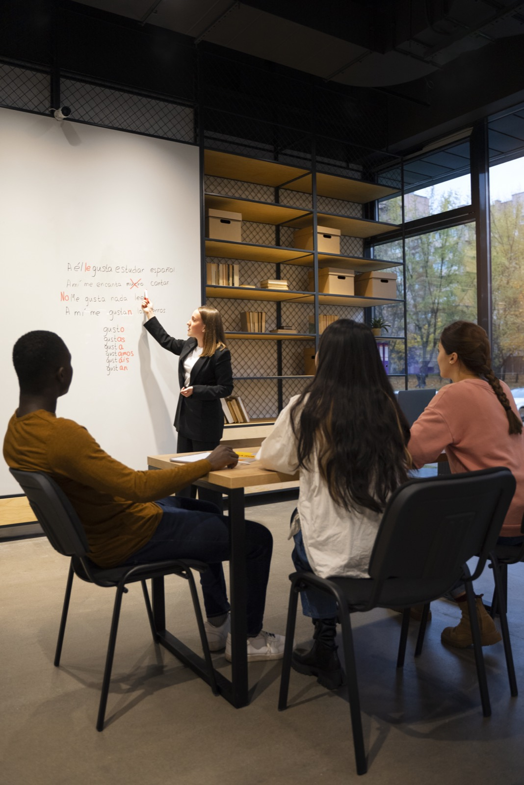
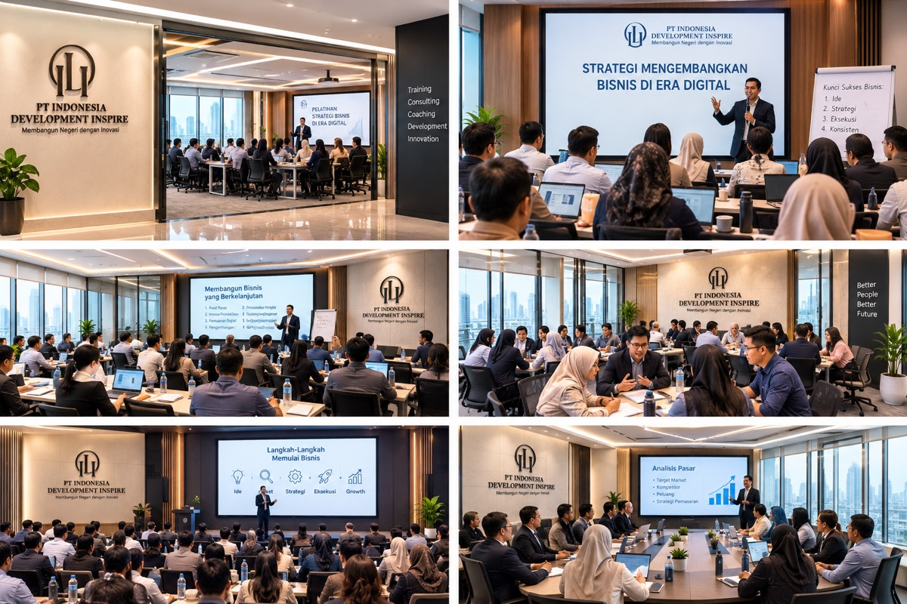
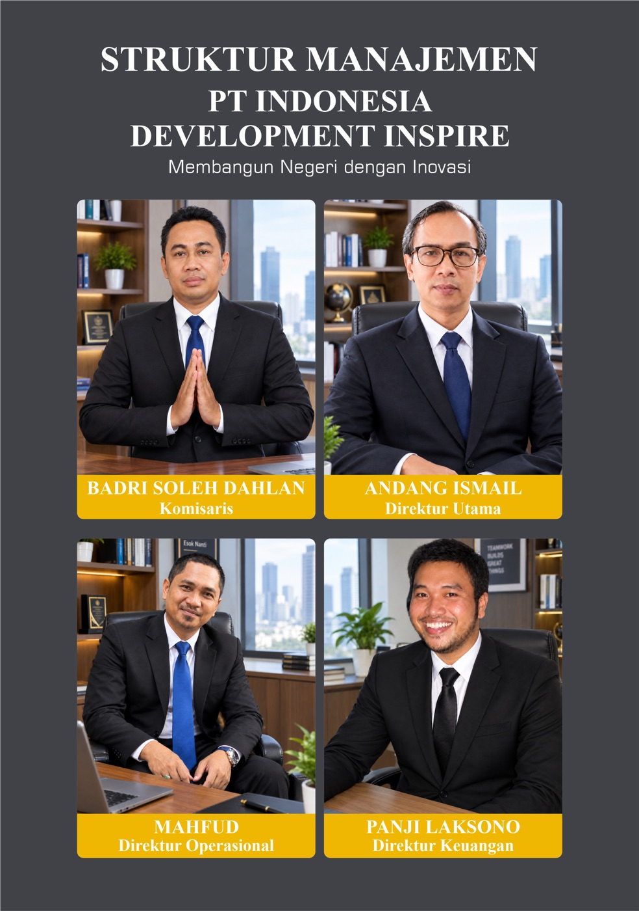

- 5Divisi terpadu
- 8Sasaran misi
- 4Bidang: SDM, bisnis, teknologi, kreatif
- DIYKotagede · Yogyakarta
01 Tentang Kami
Indonesia Development Inspire (IDI)
Lembaga yang bertumbuh bersama manusianya.
IDI hadir mendukung peningkatan kompetensi sumber daya manusia, pengembangan usaha, pemanfaatan teknologi, serta pertumbuhan organisasi dan masyarakat di Indonesia — untuk individu, pelaku usaha, UMKM, perusahaan, lembaga pendidikan, maupun organisasi.
Satu ekosistem pengembangan
IDI mengintegrasikan pendidikan dan pelatihan, pengembangan teknologi, konsultasi bisnis, pendampingan UMKM, industri kreatif, serta layanan digital dalam satu ekosistem yang saling terhubung.
Perkembangan dunia kerja dan bisnis yang semakin dinamis menuntut setiap individu dan organisasi untuk terus belajar, beradaptasi, dan meningkatkan kemampuan. Kemajuan teknologi digital, perubahan kebutuhan industri, serta berkembangnya kewirausahaan menciptakan peluang sekaligus tantangan yang membutuhkan solusi yang praktis, inovatif, dan berkelanjutan.
Melalui program pelatihan, pengembangan kompetensi, konsultasi dan pendampingan bisnis, pengembangan teknologi digital, web development, digital marketing, animasi, desain kreatif, seminar, serta workshop, IDI menghadirkan solusi yang relevan dengan kebutuhan masyarakat dan dunia usaha.
Kemajuan sebuah organisasi dan usaha tidak hanya ditentukan oleh teknologi, tetapi juga oleh kualitas manusia, strategi bisnis, kemampuan beradaptasi, kreativitas, dan kemampuan memanfaatkan teknologi secara tepat.
Setiap program IDI diarahkan tidak hanya untuk memberikan pengetahuan, tetapi juga mendorong peserta agar mampu menerapkan keterampilan tersebut dalam pekerjaan, bisnis, maupun kehidupan profesional — sehingga kompetensi benar-benar berubah menjadi produktivitas dan peluang baru.
02 Visi & Misi
Visi
“Menjadi lembaga pengembangan sumber daya manusia, bisnis, teknologi, dan kreativitas yang terpercaya, inovatif, dan berdaya saing untuk mendukung kemajuan Indonesia.”
Misi
- Menyelenggarakan pelatihan berkualitas yang relevan dengan kebutuhan dunia kerja, bisnis, teknologi, dan perkembangan industri.
- Mengembangkan kompetensi sumber daya manusia melalui program upskilling, reskilling, workshop, seminar, dan pelatihan profesional.
- Membantu UMKM dan pelaku usaha mengembangkan bisnis melalui konsultasi, pendampingan, digitalisasi, pemasaran, dan pengembangan strategi usaha.
- Menyediakan solusi teknologi digital melalui pengembangan website, aplikasi, sistem informasi, dan berbagai solusi teknologi untuk kebutuhan bisnis dan organisasi.
- Mengembangkan industri kreatif digital melalui layanan animasi, desain grafis, video, motion graphic, branding, dan produksi konten.
- Menyediakan jasa digital yang terintegrasi untuk membantu individu, perusahaan, UMKM, dan organisasi membangun serta mengembangkan kehadiran digital.
- Membangun kemitraan strategis dengan perusahaan, institusi pendidikan, komunitas, organisasi, pemerintah, dan berbagai pemangku kepentingan.
- Mendorong inovasi dan transformasi digital agar individu dan organisasi mampu beradaptasi dengan perkembangan teknologi dan perubahan dunia bisnis.
03 Divisi
Layanan Kami
Lima divisi, satu alur pengembangan.
Dari peningkatan kapasitas manusia hingga kehadiran digital — setiap kebutuhan pengembangan dijawab oleh divisi yang memang berkecimpung di dalamnya.
-
Indonesia Training Center
Konsultasi layanan ini -
Indonesia Web & Technology
Konsultasi layanan ini -
Indonesia Business Consulting
Konsultasi layanan ini -
Indonesia Creative Studio
Konsultasi layanan ini -
Indonesia Digital Marketing
Konsultasi layanan ini
04 Jadwal Pelatihan
Kelas Terbuka
Jadwal pelatihan terbaru.
Kelas terbuka untuk umum — kota, tanggal, dan pendaftaran ada di sini. Untuk pelatihan in-house di perusahaan Anda, hubungi kami untuk penjadwalan khusus.
05 Ruang Kami
Dokumentasi
Di mana ilmu dipraktikkan.


06 Struktur Manajemen
Pengelolaan yang tertata.
Struktur manajemen PT Indonesia Development Inspire memastikan setiap divisi — pelatihan, teknologi, konsultasi, kreatif, dan pemasaran digital — berjalan dalam koordinasi yang jelas.
Lihat struktur ukuran penuh
07 Kontak
Mari mulai percakapan.
Diskusikan kebutuhan pelatihan, pengembangan bisnis, atau solusi digital Anda bersama tim IDI.
- Alamat
- Jalan Kebun Raya, Gg. Andini, No. 415/KG.I, Rejowinangun, Kotagede,
Kota Yogyakarta, Daerah Istimewa Yogyakarta 55171 - Buka di Google Maps